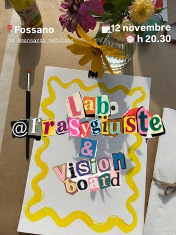
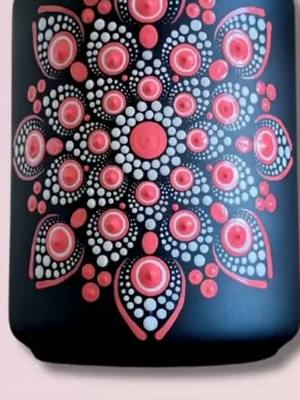
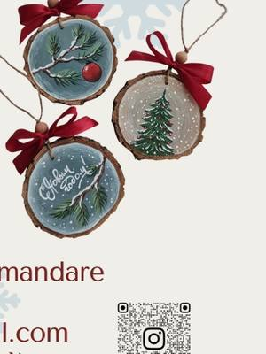
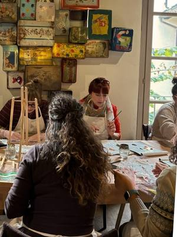
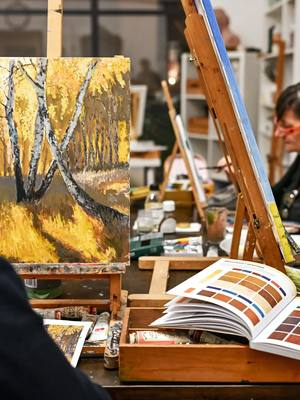
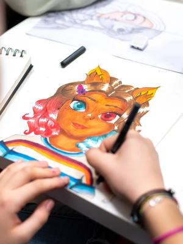
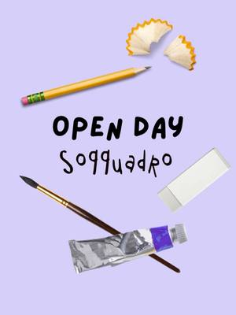
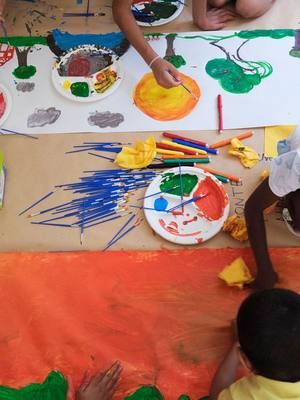

Corsi di pittura e disegno a Torino e dintorni
Corsi e workshop di pittura, acquerello, disegno, illustrazione, fumetto e collage a Torino, Cuneo e dintorni.
Cerca tutti i workshop41 attività in programma · aggiornato il 9 novembre 2026
- dom8novPitturaWorkshop di acquerello: galassie e aureoleda domenica 8 novembre a domenica 29 novembre, 10:00–12:30Vanchiglia (TO)con Yanañagui per Libreria Sur
 dal27ottPitturaZentangle: disegno per restare nel presenteda martedì 27 ottobre a martedì 8 dicembre, ogni 15 giorni, 17:30–19:00Pinerolo (TO) · Offerta liberacon Silvia Gardiol per 39/ Tramediffuse
dal27ottPitturaZentangle: disegno per restare nel presenteda martedì 27 ottobre a martedì 8 dicembre, ogni 15 giorni, 17:30–19:00Pinerolo (TO) · Offerta liberacon Silvia Gardiol per 39/ Tramediffuse dal3novPitturaArcheologie del divenire: arteterapiada martedì 3 novembre a mercoledì 16 giugno, 20:30San Salvario (TO) · Gratiscon Isabella Sartoris per Antro
dal3novPitturaArcheologie del divenire: arteterapiada martedì 3 novembre a mercoledì 16 giugno, 20:30San Salvario (TO) · Gratiscon Isabella Sartoris per Antro
gio12novPitturaFrasy Giuste: vision board e frase dipintagiovedì 12 novembre, 20:30–22:30Fossano (CN) · 25 €con Frasy Giuste ven13novPitturaWorkshop di acquerello: pettirosso o gabbianovenerdì 13 novembre, 18:00–20:00Torinocon Barbara Sirtoli
ven13novPitturaWorkshop di acquerello: pettirosso o gabbianovenerdì 13 novembre, 18:00–20:00Torinocon Barbara Sirtoli ven13novPitturaWinter is coming: arte in inglesevenerdì 13 novembre, 18:30–20:30Cuneo (CN) · 35 €con Chantal per Atelier Crea-Arti
ven13novPitturaWinter is coming: arte in inglesevenerdì 13 novembre, 18:30–20:30Cuneo (CN) · 35 €con Chantal per Atelier Crea-Arti dal13novPitturaMasterclass Andrea Serio: matita e pastelloda venerdì 13 novembre a domenica 15 novembre, 18:30Lingotto (TO) · 300 € · esauritocon Andrea Serio per Print Club Torino
dal13novPitturaMasterclass Andrea Serio: matita e pastelloda venerdì 13 novembre a domenica 15 novembre, 18:30Lingotto (TO) · 300 € · esauritocon Andrea Serio per Print Club Torino sab14novCucinaCake Painting: decora e dipingi una tortasabato 14 novembreCentro (TO) · 50 €con Aperi Pods
sab14novCucinaCake Painting: decora e dipingi una tortasabato 14 novembreCentro (TO) · 50 €con Aperi Pods dal14novPer famiglieIl viaggio di Lumi: le emozioni per bambinida sabato 14 novembre a sabato 12 dicembre, ogni sabato, 10:00–11:30Pinerolo (TO) · 100 €con Le Arti di Marti con Emanuela Busso
dal14novPer famiglieIl viaggio di Lumi: le emozioni per bambinida sabato 14 novembre a sabato 12 dicembre, ogni sabato, 10:00–11:30Pinerolo (TO) · 100 €con Le Arti di Marti con Emanuela Busso
sab14novPitturaCrea il tuo mandala: pittura a puntinisabato 14 novembre, 15:00–18:00Aurora (TO)con Alma Mandala dom15novPitturaBiglietti di Natale ad acquerellodomenica 15 novembre, 10:00–12:00Cuneo (CN) · 35 €con Angelica Nolasco per Atelier Crea-Arti
dom15novPitturaBiglietti di Natale ad acquerellodomenica 15 novembre, 10:00–12:00Cuneo (CN) · 35 €con Angelica Nolasco per Atelier Crea-Arti- mar17novPitturaGrovigli: laboratorio di arteterapiamartedì 17 novembre, 18:00–20:00Ivrea (TO) · 15 €con Ivonne Albertin per Open Art House

mar17novPitturaAperitivo Artistico: palline di Natalemartedì 17 novembre, 19:00–21:30Biella (BI) · 35 €con Aperitivo Artistico dom22novPitturaGlass painting: calice dipinto e vinidomenica 22 novembre, 17:00–19:00Cuneo (CN) · 35 €con Angelica Nolasco per Atelier Crea-Arti
dom22novPitturaGlass painting: calice dipinto e vinidomenica 22 novembre, 17:00–19:00Cuneo (CN) · 35 €con Angelica Nolasco per Atelier Crea-Arti gio26novPitturaWorkshop di pittura: creature su porcellanagiovedì 26 novembre, 18:00Centro (TO) · 60 €con Benedetta Faravelli per Quadratino
gio26novPitturaWorkshop di pittura: creature su porcellanagiovedì 26 novembre, 18:00Centro (TO) · 60 €con Benedetta Faravelli per Quadratino
sab28novPitturaAperitivo Artistico: tela per studentisabato 28 novembreBiella (BI) · 27 €con Aperitivo Artistico- dom6dicPitturaPaint & sip: un quadro con un drinkda domenica 6 dicembre a domenica 20 dicembre, 20:00–22:00San Salvario (TO) · 25 €con CamPaint
 dal29lugPitturaCronache dal Giardino: disegno botanicoda giovedì 29 luglio a domenica 1 agosto, 18:30Lingotto (TO) · 450 €con Riccardo Guasco e Giovanna Giuliano per Print Club Torino
dal29lugPitturaCronache dal Giardino: disegno botanicoda giovedì 29 luglio a domenica 1 agosto, 18:30Lingotto (TO) · 450 €con Riccardo Guasco e Giovanna Giuliano per Print Club Torino datada confermarePitturaCorsi di disegno e pittura: china e pastelloData da confermareTorinocon Barbara Sirtoli
datada confermarePitturaCorsi di disegno e pittura: china e pastelloData da confermareTorinocon Barbara Sirtoli datada confermarePitturaCorso di pittura: porcellana e stoffaData da confermareMirafiori (TO)con Emilia Cerrato per Casa nel Parco
datada confermarePitturaCorso di pittura: porcellana e stoffaData da confermareMirafiori (TO)con Emilia Cerrato per Casa nel Parco- datada confermareAltroCascina Roccafranca: corsi della stagioneData da confermareMirafiori (TO)con Cascina Roccafranca

dataa sceltaPitturaPalestra creativa: arte per adultiData a sceltaTorino · 30 € a lezionecon Kreative Club
dataa sceltaPitturaCorso di urban sketching: disegnare la cittàData a sceltaTorino · 129 € per 6 lezionicon Kreative Club dataa sceltaPitturaPittura acrilica con drink in serraData a sceltaCampidoglio (TO) · da 55 €con Luzzi B
dataa sceltaPitturaPittura acrilica con drink in serraData a sceltaCampidoglio (TO) · da 55 €con Luzzi B dataa sceltaAltroTappezzeria e restyling: pouf e mobiliData a sceltaBarriera di Milano (TO) · da 20 €con Magazzini Tessili
dataa sceltaAltroTappezzeria e restyling: pouf e mobiliData a sceltaBarriera di Milano (TO) · da 20 €con Magazzini Tessili ognimarPitturaImpara a dipingere: corso di pittura a olioOgni martedìMondovì (CN)con Dalid Baez per Museo Della Casa
ognimarPitturaImpara a dipingere: corso di pittura a olioOgni martedìMondovì (CN)con Dalid Baez per Museo Della Casa dataa sceltaPitturaNovel Academy: corsi di disegno e pitturaData a sceltaTorinocon Novel Academy
dataa sceltaPitturaNovel Academy: corsi di disegno e pitturaData a sceltaTorinocon Novel Academy dataa sceltaPitturaCorsi di disegno: grafite, pastello e chinaData a sceltaCentro (TO)con Barbara Sirtoli per Polo Le Rosine
dataa sceltaPitturaCorsi di disegno: grafite, pastello e chinaData a sceltaCentro (TO)con Barbara Sirtoli per Polo Le Rosine dataa sceltaPitturaCorso di disegno manga: il tuo personaggioData a sceltaCentro (TO)con Alice Molinaro per Polo Le Rosine
dataa sceltaPitturaCorso di disegno manga: il tuo personaggioData a sceltaCentro (TO)con Alice Molinaro per Polo Le Rosine datada confermarePitturaWorkshop di manga: storie e fumettiData da confermareCentro (TO)con Wada Shinobu per Polo Le Rosine
datada confermarePitturaWorkshop di manga: storie e fumettiData da confermareCentro (TO)con Wada Shinobu per Polo Le Rosine dataa sceltaPitturaCorso di pittura: su porcellanaData a sceltaCit Turin (TO)con Scialabà
dataa sceltaPitturaCorso di pittura: su porcellanaData a sceltaCit Turin (TO)con Scialabà
dataa sceltaPitturaCorsi di disegno e pittura: lezione di provaData a sceltaCollegno (TO)con Soqquadro- dataa sceltaPitturaCorso di fumetto: dai personaggi alla storiaData a sceltaCollegno (TO)con Giorgio Sommacal e Claudio Taurisano per Soqquadro
 ognilunPitturaPittura antroposofica: colore e acquaOgni lunedìGrugliasco (TO) · 15 € a incontrocon Alessandra per Spazio Elastico
ognilunPitturaPittura antroposofica: colore e acquaOgni lunedìGrugliasco (TO) · 15 € a incontrocon Alessandra per Spazio Elastico- ognimerPitturaCorso d’arte in inglese: per ogni etàOgni mercoledì, 15:00–16:30Cuneo (CN) · 180 € per 6 lezionicon Chantal per Atelier Crea-Arti

ognilunPer famiglieUn passo alla volta: cartoni animati per bambiniOgni lunedì, 16:30–18:30Aurora (TO) · 30 € al mesecon Luna Clara Ronco per Cecchi Point- ognimarPitturaCorso di fumetto: personaggi e storieOgni martedì, 17:00–20:00San Mauro Torinese (TO)con Lorenzo Balocco per upTOyou
- ognivenPitturaPercorso artistico: disegno e pitturaOgni venerdì, 17:00–19:00San Mauro Torinese (TO)con upTOyou
 ognivenPitturaCorso di pittura: olio e grandi maestriOgni venerdì, 18:00–20:00Centro (TO) · 100 € per 4 lezionicon Mery Rigo per Polo Le Rosine
ognivenPitturaCorso di pittura: olio e grandi maestriOgni venerdì, 18:00–20:00Centro (TO) · 100 € per 4 lezionicon Mery Rigo per Polo Le Rosine dataa sceltaPitturaClub di Disegno: illustrazione liberaOgni 2 mercoledì, 19:00–20:30Barriera di Milano (TO) · 15 € a lezionecon Malena De Luca per Bunker
dataa sceltaPitturaClub di Disegno: illustrazione liberaOgni 2 mercoledì, 19:00–20:30Barriera di Milano (TO) · 15 € a lezionecon Malena De Luca per Bunker ognilunPitturaCorso di graffiti: writing urbanoOgni lunedì, 19:00–20:30Barriera di Milano (TO) · 20 € a lezionecon Nikka per Bunker
ognilunPitturaCorso di graffiti: writing urbanoOgni lunedì, 19:00–20:30Barriera di Milano (TO) · 20 € a lezionecon Nikka per Bunker